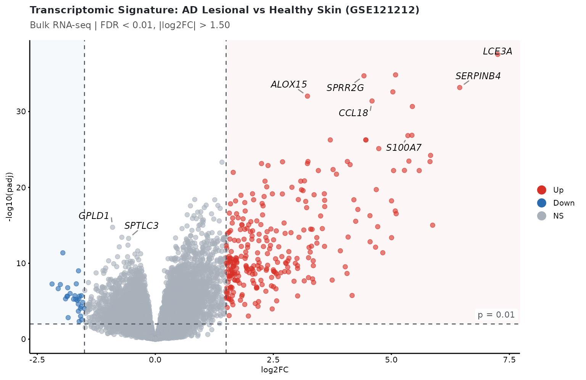
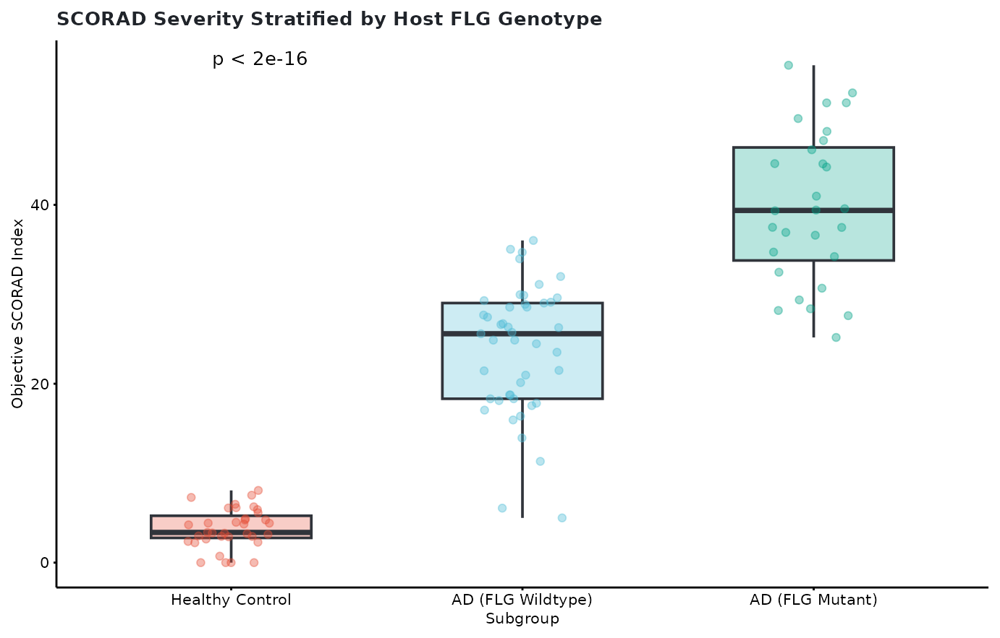
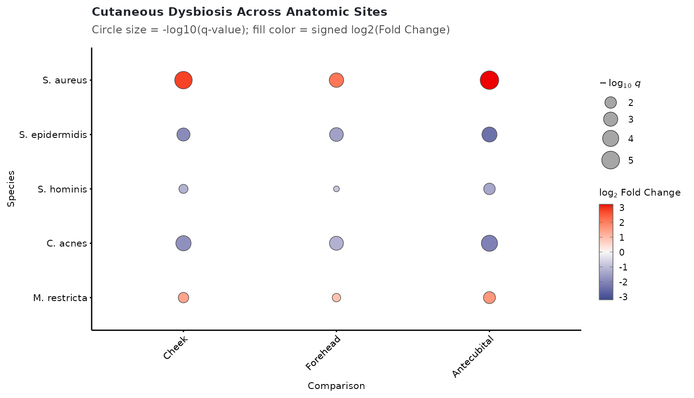
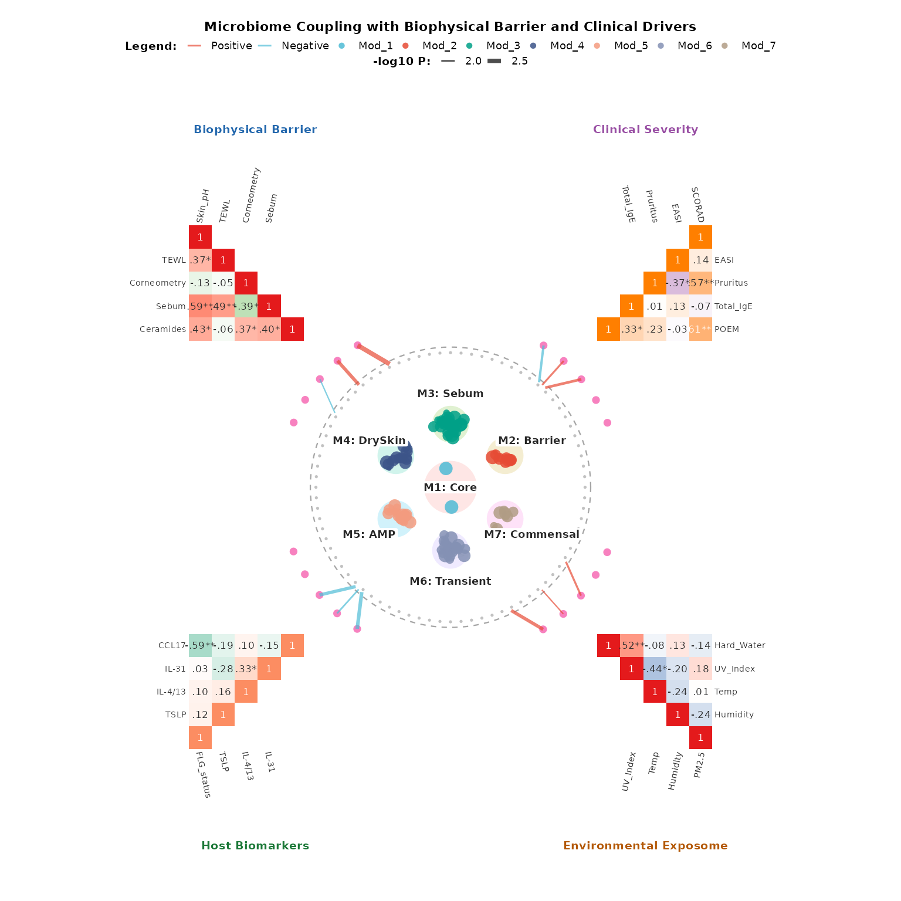
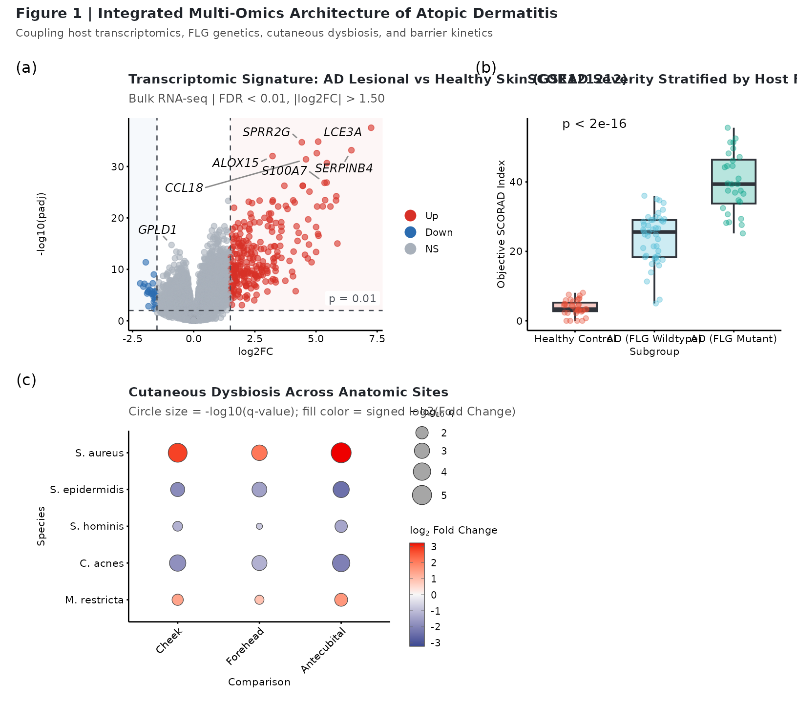

Case Study: Biomarker Stratification and Dysbiosis in Atopic Dermatitis
Lucas VHH Tran
2026-11-26
Source:vignettes/case-study-atopic-dermatitis.Rmd
case-study-atopic-dermatitis.RmdOverview
Atopic Dermatitis (AD) is a multifactorial inflammatory skin disease characterized by epidermal barrier dysfunction, immune hyperactivation, and cutaneous microbial dysbiosis.
This case study demonstrates a complete multi-omics reporting workflow in cliomicplot, integrating four biological dimensions:
- Host Transcriptomics: Differential expression analysis from NCBI GEO GSE121212 comparing lesional AD to healthy control skin.
- Host Genetics & Clinical Severity: Patient objective SCORAD severity stratified by loss-of-function variants in the filaggrin (FLG) gene.
- Cutaneous Metagenomics: Differential microbial abundance across anatomical predilection sites (cheek, forehead, antecubital crease).
- Systems Biology Multi-Domain Coupling: Central microbial network linked to biophysical barrier function (TEWL, stratum corneum hydration), clinical severity, and micro-climate drivers.
Step 1: Host Transcriptomic Signature (NCBI GEO GSE121212)
We load the bundled NCBI GEO GSE121212 RNA-seq dataset
(geo_dermatology_series_de.rds), containing differential
expression statistics from 27 lesional AD, 28 psoriasis, and 30 healthy
control skin biopsies:
data_path <- system.file("extdata", "geo_dermatology_series_de.rds", package = "cliomicplot")
series <- readRDS(data_path)
ad_labels <- c("SERPINB4", "CCL18", "S100A7", "LCE3A", "SPRR2G", "ALOX15", "GPLD1", "SPTLC3")
p_volc <- cliplot(
-log10(padj) ~ log2FC,
data = series$ad_vs_hc,
type = type_volcano(
fc_cutoff = 1.5,
pval_cutoff = 0.01,
point_size = 1.8,
point_alpha = 0.60,
label_genes = ad_labels,
max_overlaps = 25
),
preset = "nature",
title = "Transcriptomic Signature: AD Lesional vs Healthy Skin (GSE121212)",
subtitle = "Bulk RNA-seq | FDR < 0.01, |log2FC| > 1.50"
)
p_volc
Step 2: Clinical Severity Stratified by Host FLG Status
Loss-of-function variants in filaggrin (FLG) represent the strongest genetic risk factor for AD. Here we evaluate objective SCORAD across healthy controls, FLG wildtype AD, and FLG mutant AD patients:
set.seed(42)
cohort_df <- data.frame(
Subgroup = factor(
rep(c("Healthy Control", "AD (FLG Wildtype)", "AD (FLG Mutant)"), c(35, 45, 28)),
levels = c("Healthy Control", "AD (FLG Wildtype)", "AD (FLG Mutant)")
),
SCORAD = c(
pmax(0, rnorm(35, mean = 3.5, sd = 2.0)),
pmax(5, rnorm(45, mean = 24.2, sd = 7.5)),
pmax(12, rnorm(28, mean = 38.6, sd = 9.2))
)
)
p_box <- cliplot(
SCORAD ~ Subgroup,
data = cohort_df,
by = "Subgroup",
type = "boxplot",
palette = "nature",
legend = "none",
stat.test = "kruskal.test",
title = "SCORAD Severity Stratified by Host FLG Genotype",
ylab = "Objective SCORAD Index"
)
p_box
Step 3: Cutaneous Dysbiosis Across Anatomical Sites
Using type_bubble_matrix(), we evaluate differential
bacterial abundance across three predilection sites (cheek, forehead,
and antecubital crease):
species <- c("S. aureus", "S. epidermidis", "S. hominis", "C. acnes", "M. restricta")
sites <- c("Cheek", "Forehead", "Antecubital")
da_ad <- expand.grid(Species = species, Comparison = sites, stringsAsFactors = FALSE)
da_ad$log2FC <- c(
2.8, -1.9, -1.2, -1.8, 1.4,
2.1, -1.5, -0.8, -1.2, 0.9,
3.2, -2.4, -1.4, -2.1, 1.6
)
da_ad$qval <- c(
1.5e-5, 2.8e-3, 0.04, 3.1e-4, 0.02,
7.2e-4, 1.5e-3, 0.08, 1.2e-3, 0.05,
2.8e-6, 3.9e-4, 0.01, 9.8e-5, 0.007
)
p_bubble <- cliplot(
Species ~ Comparison,
data = da_ad,
type = type_bubble_matrix(
size_col = "qval",
fill_col = "log2FC",
min_size = 2.0,
max_size = 7.0,
palette = "nature"
),
title = "Cutaneous Dysbiosis Across Anatomic Sites",
subtitle = "Circle size = -log10(q-value); fill color = signed log2(Fold Change)"
)
p_bubble
Step 4: Central Microbiome Network Coupled with Biophysical Barrier Drivers
cliplot_env_network() bridges cutaneous microbiome
co-occurrence modules with biophysical barrier metrics (transepidermal
water loss, skin pH) and clinical severity indices:
p_env <- cliplot_env_network(
title = "Microbiome Coupling with Biophysical Barrier and Clinical Drivers",
subtitle = "Central Skin Microbiome Network Linked to 4 Peripheral Indicator Domains",
show_values = TRUE,
show_domain_labels = TRUE,
compact = TRUE,
preset = "clinical",
scifig = TRUE
)
p_env
Step 5: Publication Composite Figure Assembly
We combine the four figures into a multi-panel Nature-style composite
figure using patchwork:
p_composite <- (p_volc | p_box) / (p_bubble | plot_spacer()) +
plot_layout(heights = c(1.0, 0.9)) +
plot_annotation(
tag_levels = "a",
tag_prefix = "(",
tag_suffix = ")",
title = "Figure 1 | Integrated Multi-Omics Architecture of Atopic Dermatitis",
subtitle = "Coupling host transcriptomics, FLG genetics, cutaneous dysbiosis, and barrier kinetics",
theme = theme(
plot.title = element_text(size = 11, face = "bold"),
plot.subtitle = element_text(size = 8.5, color = "grey30")
)
)
p_composite
Publication Compliance Check with cli_scifig_qa()
qa_res <- cli_scifig_qa(p_volc, journal = "nature", column = "double")
qa_res
#>
#> === SciFig QA Journal Compliance Report ===
#> Journal: NATURE | Column: double
#> --------------------------------------------------------------------------------
#> [PASS] Physical Width : 183.0 mm (Target: 183.0 mm)
#> Rule: NATURE double-column specification
#> [PASS] Physical Height : 146.4 mm (Max: 170.0 mm)
#> Rule: NATURE printable page boundary
#> [PASS] Font Size Floor : Min text size: 8.5 pt (Floor: 5.0 pt)
#> Rule: NATURE font-floor specification
#> [PASS] Stroke Width Floor : Spine/edge widths adhere to standard presets
#> Rule: NATURE hairline-floor specification
#> [PASS] Zero Sign Suppression : Zero sign suppression verified (no negative zeros)
#> Rule: SciFig reporting gate: zero sign suppression
#> [PASS] Color Accessibility : High-contrast anchored palettes with neutral midpoint
#> Rule: Nature Publishing Group / Wong (2011) CVD standard
#> --------------------------------------------------------------------------------
#> Verdict: PASSED - All gates comply with publisher standards.